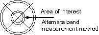
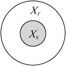
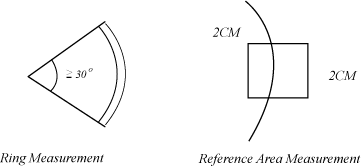
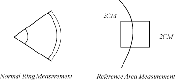
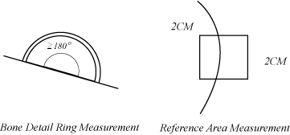

Proprietary to General Electric
Direction 5196839-800, Rev# 6
RT16 and Xtra Service Info Adv
Proprietary to General Electric |
The purpose of this module is to specify image artifact tolerances and measurement criteria for those artifacts seen in test phantoms that otherwise pass the Image Performance Specification but contain visually objectionable artifacts.
The system must meet all the conditional requirements and applicable performance document requirements, as called out in the Image Performance Specification. Each row of the detector must pass on its own right. Protocols must be consistent so that you do not confuse the rows. Scans should be done in the head first orientation from I to S. This ensures that if images are displayed 4 at a time, row 2a will be in the upper left hand corner, row 1a in upper right, row 1b in lower left, and row 2b in lower right.
This document applies to those images obtained while performing scans in accordance with the applicable image performance specification. Unless otherwise specified, all artifact criteria contained in this section applies to standard algorithm 512x512 image reconstructions.
EXCEPTIONS
The following phantoms are excluded from the artifact requirements, because they are designed to test specific performance parameters, and are not representative of anatomy:
QA phantom - High contrast resolution bar pattern section.
QA phantom - Low contrast resolution hole pattern section.
Dark or light circles or arcs concentric with the axis of rotation. Bands are defined as being 3 pixels wide or wider, but may have poorly defined edges. Width is the main distinguishing feature between bands and rings.
Band specs apply to all Standard reconstruction images. They are evaluated by the following:
| b - r| ≤
T
b - r| ≤
T
where:
b is the mean value of the band measured
as an arc of no less than 3 pixels in width and no less than 51 pixels area,
r is the mean value of a reference area measured
as the mean value of two arcs measured on either side of the band-each arc
shall be no less than 51 pixels in area - and
T is the threshold value for the phantom as defined in “threshold values” section.
The preferred method of measurement is using the "IABAND" program. Measurement is to be performed on the most intense part of the band. The band measurement should be the entire width of the band.
When near the center or edge of an image, one ROI value may be used
to define r. If this is done, the reference area should
be at least 102 pixels. Measurements may be taken at any radius and at any
angle.
A band is considered a failure for any value greater than the following over the indicated radius:
Table 1: Threshold Values - Band Specifications
| PHANTOM | 4X500 | 4X375 | 4X250 | 4X125 | RADIUS |
|---|---|---|---|---|---|
| 48/L | 8.0 | 8.0 | 8.0 | 8.0 | 0 - 23.5 cm |
| 35/L | 2.5 | 2.5 | 2.5 | 2.5 | 0 - 14.0 cm |
| 35/L | 3.5 | 3.5 | 3.5 | 3.5 | 14.0 - 15.0 cm |
| 35/L | 12 | 12 | 12 | 12 | > 15.0 cm |
| 20/S | 2.8 | n/a | 2.8 | 2.8 | 0 - 8.5 cm |
| 5/S, 65° Slope, BIS, WEQ/WEQ | 2.3 | 2.3 | 2.3 | 2.3 | 0 - 2.0 cm |
| 5/S, 65° Slope, BIS, WEQ/WEQ | 2.6 | 2.6 | 2.6 | 2.6 | 2.0 - 5.1 cm |
| Note: When using the IA band program, be sure to ignore the outer reference area if its outside 15.0 cm | |||||
| NOTE: | When using the IA band program, be sure to ignore the outer reference area if outside of 15.0 cm. |
Addendum: For 35/L, if beyond 15.0cm the band is greater than 3.5 counts, scan 4 slices of the muscle fat phantom at the 35/L technique. The phantom must be off centered such that portions of both the muscle and fat regions will be located at the radius of the band in question. Use an ISD of 1 second (or 5 seconds) so that the start angle will vary by 90 degrees from scan to scan. If there is no banding visible at the same radius as the 35/L banding, the 35/L scans are considered to be passing.
For 20/S, if beyond 8.5cm the band is greater than 2.8 counts, scan 4 slices of 25cm phantom on small cal at the same technique that the 20cm was failing. The band should be less than 4 counts on the 25cm phantom.
Since all bands are not created equal, this method should be used for unusually wide bands, unusually narrow bands, bands that are surrounded by bands of opposing colors, or other cases where the IA band program will give unpredictable results. It can also be used to pass 48cm, 35cm, and 25cm/L images that fail the IA band program.
An alternative to the IA band program that can be performed in the standard display program and allows extra flexibility for the regions of interest is to define the band area or reference area by depositing cursors (circular to outline the inner and outer boundaries of the area, and line cursors to define the upper and lower (or left and right) boundaries of the area. Circular cursors shall be centered at the center of reconstruction. Line cursors shall cross at the center of the reconstruction circle. The reference area(s) shall be bounded by the same line cursors as the band area. All other requirements of section 4.1 remain as previously stated.
Illustration 1: Alternative Band Measurement

80% of all slices within a run must meet this specification.
Dark or light area of 169 pixels (13 x 13 box) near the center of scan FOV having poorly defined edges. The reference area around the smudge is measured by the ROI of a 41 x 41 ellipse and does not include the smudge area.
Smudge specs shall apply to Standard reconstruction images as specified in the “threshold values” section. It shall be evaluated by the following:
|AV {s - r}|
≤ Ts
where:
s is the mean value of the smudge area,
r is the mean value of a 41 x 41 ellipse
and excludes the smudge area,
AV{ } is the Average Threshold value for a minimum of 4 slices on a given row, and
Ts is the threshold value.
Perform the measurement of the smudge area by depositing a centered circular cursor directly over the most intense portion of the smudge, place the cross-hair inside the smudge area and do an ROI. Perform the measurement of the reference area by depositing a circular cursor positioned such that its center coincides with the center of the smudge area, then placing the cross-hair cursor inside the reference but outside of the smudge area, do an ROI.
Smudge cursor size = 13 x 13 ellipse
Reference cursor size = 41 x 41 ellipse.
Illustration 2: Center Smudge Measurement

Smudge specs shall be evaluated using the following threshold values:
Table 2: Threshold Values - Smudge Specifications
| PHANTOM | 4X500 | 4X375 | 4X250 | 4X125 |
|---|---|---|---|---|
| 48/L | 14.0 | 14.0 | 14.0 | 14.0 |
| 35/L | 2.2 | 2.2 | 2.2 | 4.0 |
| 20/S | 2.2 | 2.2 | 2.2 | 4.0 |
| 20/L | 3.0 | 3.0 | 3.0 | 4.0 |
| 5/S, 65° Slope, BIS, WEQ/WEQ | 3.5 | 3.5 | 3.5 | 4.0 |
Use the Image Analysis smudge program.
(See Image Analysis Tools.)
A sharply defined small area (usually the center 4 pixels) having mean pixel values that differ more than a threshold value (see below) from the reference area. The average of a four pixel box that includes at least one of the four center pixels must be greater than the specified threshold value to be considered a failure.
The average of the 4 center pixels or the average of any four pixel box that includes any of the four center pixels must be more than 3.5 x σr (σr= the standard deviation) limits to be considered a center artifact. See Section 4.3.4.
Reference area shall be a 41 x 41 pixel box at the center of the image. r is
the mean of the box, and σr is the standard deviation
of the same box. a is the mean of any 4 pixel box that includes
one or more of the center 4 pixels.
Each of the 4 pixel boxes that includes any one or more of the 4 center pixels must have a mean value, AVXr, within the following limits:
Table 3: Threshold Values - Center Artifact
| 4X5.00 | 4X3.75 | 4X2.50 | 4X1.25 | 8X2.50 | 8X.125 | 1X1.25 | 2X0.63 | |
|---|---|---|---|---|---|---|---|---|
| 35/L | r±3.5σr | n/a | r±3.5σr | r±3.5σr | r±3.5σr | r±3.5σr | r±3.5σr | r±7.0σr |
| 20/S & 20/L | r±3.5σr | n/a | r±3.5σr | r±3.5σr | r±3.5σr | r±3.5σr | r±3.5σr | r±7.0σr |
where:
r is the mean value of the 41 x 41 pixel
box and
σr is the standard deviation of the 41 x 41 pixel box.
AVXr is the average of Xr of a minimum of 4 images from the same detector row.
This specification does not apply to phantom and cals not noted in the table above.
Use the Image Analysis center artifact program.
(See Image Analysis Tools.)
A dark or light circle or arc approximately 3 or less pixels in width. Rings are typically one pixel wide.
48/L images: the ring must be greater than or equal to 30 degrees of ARC and have a minimum diameter of no smaller than 1cm. The ring must also be repeatable at the same radius and image quadrant.
This specification applies to standard reconstruction 48cm and 42cm phantoms.
Measure the ring using ROI by placing two elliptical arcs surrounding the ring and taking care to include only pixels that are on the ring. The image may be magnified to accommodate this measurement. Next, measure the background mean CT number of the non-magnified image by using a 2cm x 2cm box ROI directly centered about the ring or partial ring.
Illustration 3: Ring Measurement - 48cm and 42cm phantoms

|r - a| ≤
T
where:
r is the mean pixel value of the ring, and
a is the mean pixel value of a 2cm x 2cm
reference area, and
T is the threshold value for failure as shown in the table below.
Table 4: Threshold Values Failure Specifications (Part 1)
| 4X5.00 | 4X3.75 | 4X2.50 | 4X1.25 | 1X1.25 | 2X0.63 | |
|---|---|---|---|---|---|---|
| 48/L | 36.0 | 36.0 | n/a | n/a | n/a | n/a |
| 42/L | 15.0 | 15.0 | n/a | n/a | n/a | n/a |
Use the Image Analysis ring program, adding 20% to the failure threshold.
(See Image Analysis Tools.)
80% of all slices within 10 contiguous slices.
A dark or light circle or partially closed circle approximately 3 or less pixels in width. Rings are typically one pixel in width.
All images.
Measure the ring using ROI by placing two elliptical arcs surrounding the ring and taking care to include only pixels that are on the ring. The image may be magnified to accommodate this measurement. Next, measure the background mean CT number of the normal or magnified image by using a 2cm x 2cm box ROI directly centered about the ring or partial ring.
For 5" images with tight rings located about the center 4 pixels, magnify the image to fill the whole display screen, then apply the method and criteria described in this section.
On bone detail images, the ring must be ≥ 180° arc.
Illustration 4: Ring Measurement - All other phantoms

Illustration 5: Bone Detail Ring Measurement

|r - a| ≤
T
where:
r is the mean pixel value of the ring, and
a is the mean pixel value of a 2cm x 2cm
reference area, and
T is the threshold value for failure as shown in the table below:
Table 5: Threshold Values Failure Specifications (Part 2)
| PHANTOM | 4X5.00 | 4X3.75 | 4X2.50 | 4X1.25 | 1X1.25 | 4X1.25 |
|---|---|---|---|---|---|---|
| 35/L | 4.8 | 4.8 | 4.8 | n/a | n/a | n/a |
| 25/S | 4.0 | n/a | 4.0 | 4.0 | n/a | n/a |
| 20/S | 4.8 | 4.8 | 4.8 | 4.8 | 4.8 | 9.6 |
| 5"/S | 4.8 | 4.8 | 4.8 | 4.8 | n/a | n/a |
| 65° Slope, BIS, WEQ/WEQ | 4.8 | 4.8 | 4.8 | 4.8 | n/a | n/a |
| NOTE: | For reference; may not be available. |
Use the Image Analysis ring program, adding 20% to the failure threshold.
(See Image Analysis Tools.)
No greater than one in 250 slices on a given calibration.
Straight dark or light lines across the images, 3 or less pixels in width. Streaks may be any length.
Streak specs apply to all images.
Outline the streak by depositing a line cursor on either side of the streak, and bound the ends by depositing a cursor on them. Use ROI inside the streak area. If necessary, magnify the image to accomplish the measurement.
|s - r| ≤
4.0 counts
where:
s is the mean value of the streak, and
r is the mean value of a 41 x 41 pixel reference
area
Use the Streak program in Image Analysis.
(See Image Analysis Tools.)
No more than 1 failing streak out of 50 images.
Small light or dark areas at the center of the scan FOV. These must be 3 or more contiguous failing pixels within the center 9x9 pixels. All 3 of the pixels must be on the positive or negative side of the specification to considered a failure.
This specification applies to all 48/L phantom scans.
Center a 41 x 41 pixel box and determine the mean and standard deviation. Perform a cursor report on a 9x9 pixel box at the center of the image. Search for three or more contiguous pixels that are outside of the limits.
Each pixel in a 9x9 box at the center of the image must be within the following limits:
Table 6: Threshold Values - Clump
| 4X5.00 | 4X3.75 | 4X2.50 | 4X1.25 | |
|---|---|---|---|---|
| 48/L | r±3.5σ | r±3.5σ | n/a | n/a |
where:
r is the mean value of the 41 x 41 pixel
box and
σr is the standard deviation of the 41 x 41 pixel box.
Use the Image Analysis clump program, making sure to use the proper sigma factor.
(See Image Analysis Tools.)
80% of all slices within a run must meet this specification.
Dark or light area near the center of the scan FOV having no defined edges and consisting of up to 25 pixels.
Phantoms: 5", 65º Slope, BIS, and WEQ/WEQ.
Measure the reference area with a centered 21 x 21 pixel box. Keeping a 5 x 5 box within a centered and deposited 9x9 box (so that the center pixel is always included), search for the 5x5 box with the largest mean value difference from the reference area.
This specifications applied in two parts as follows:
Center spot - The difference in mean values shall be:
|s - r| ≤
3.2 for 120Kv/10mm and 5mm scans.
|s - r| ≤
3.5 for 100Kv, 140kV/10mm and 5mm scans, and 80 kV scans.
Max pixel (for white spots only) - A spot is white if it is greater than the surrounding area by:
For 5mm and 10m
|s - r| >
1.5 for 120 kVp.
|s - r| ≥
1.8 for 140 kVp, 100kVp.
If the spot is white, the maximum allowable pixel value within the 5x5 box shall be less than a 4 count difference from the reference area.
For 1mm
|s - r| ≥
2.4 for 120 kVp.
|s - r| ≥
2.9 for 100 kV, 140kV.
Max pix value = 6.4
Use the Image Analysis center spot program.
(See Image Analysis Tools.)
90% of all slices within a run must meet this specification.
A system that has a visual artifact described in this document that passes its respective specification shall be considered to be clinically acceptable within the nominal service interval.
A system that has a visual artifact that does not meet the descriptions of artifacts described in 1X Image Series Outline and determined to be objectionable by Quality Control, shall be brought to the attention of Systems Engineering in order to determine the nature of the artifact. If the system meets the engineering specification and the problem can not be rectified, then Systems Engineering, CT Manufacturing, and CT Applications will jointly take measure to determine the clinical implications of the artifact.